9 Análisis e interpretación de imágenes
Fuente original: Natural Resources Canada - Remote Sensing Tutorials
9.1 Introducción al análisis de imágenes
La extracción de información a partir de datos teledetectados requiere analizar las interacciones de la energía electromagnética con las coberturas terrestres. El análisis implica la identificación y medición de objetivos mediante dos enfoques complementarios: la interpretación visual y el procesamiento digital.
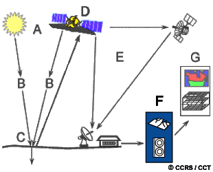
- Formato analógico (Interpretación Visual): Aprovecha la capacidad del cerebro humano para reconocer patrones espaciales sobre imágenes pictóricas (impresas). Su limitación principal es la dificultad de evaluar simultáneamente múltiples bandas espectrales.
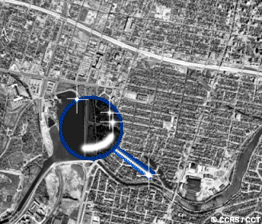
- Formato digital (Procesamiento Informático): Los sensores electrónicos registran la información como matrices de Niveles Digitales. El entorno digital permite procesar múltiples bandas de forma objetiva, realzar contrastes y clasificar grandes volúmenes de datos con rapidez.
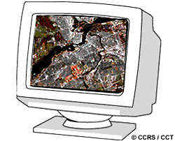
9.2 Elementos de la interpretación visual
La interpretación humana se basa en el reconocimiento de siete elementos fundamentales que definen espacialmente las coberturas:
- Tono: Es el brillo relativo o color de los objetos. Sin variaciones de tono, sería imposible discernir formas o texturas.
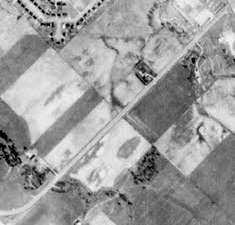
- Forma: Contornos regulares y rectilíneos denotan intervención antrópica (agricultura, vías), mientras que los irregulares caracterizan procesos naturales.
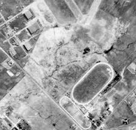
- Tamaño: Evaluado según la escala de la imagen, discrimina objetos funcionalmente similares pero jerárquicamente distintos (ej. fábricas vs. residencias).
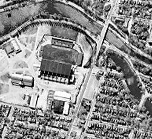
- Patrón: La repetición espacial ordenada. Huertos o zonas urbanas muestran patrones estructurados, a diferencia de la distribución aleatoria silvestre.
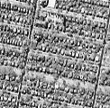
- Textura: La frecuencia de variación tonal (“rugosidad”). Un bosque denso presenta textura rugosa, mientras que una pradera o el asfalto lucen lisos.
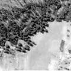
- Sombra: Ayuda a perfilar el relieve tridimensional y facilita la identificación de estructuras verticales, aunque oculta la radiometría de lo que cubre.
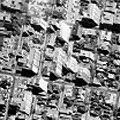
- Asociación: Inferencia por contexto geográfico. Ej. zonas residenciales asociadas a escuelas, o embarcaciones asociadas a cuerpos de agua.
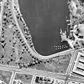
9.3 Procesamiento digital de imágenes
El procesamiento implica la manipulación de los valores radiométricos en estaciones de trabajo para facilitar la interpretación o la clasificación automática.
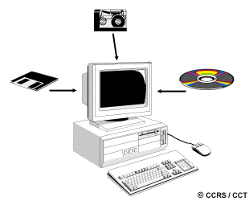
Se estructura en cuatro categorías: 1. Pre-procesamiento: Correcciones radiométricas y geométricas. 2. Realce (Enhancement): Optimización del contraste visual. 3. Transformaciones: Operaciones entre múltiples bandas. 4. Clasificación y análisis: Mapeo temático de la imagen.
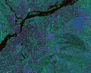
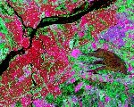
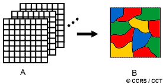
9.4 Pre-procesamiento
Busca corregir los errores introducidos por el sensor y la geometría de adquisición.
Correcciones radiométricas: * Mosaicos: Corrige las variaciones de iluminación para poder unir sin costuras múltiples imágenes contiguas.
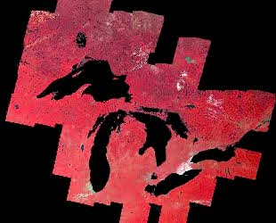
- Corrección atmosférica: Resta los valores mínimos observados (ej. en sombras profundas o lagos claros) para eliminar el brillo añadido por la dispersión atmosférica.
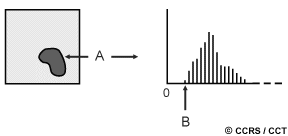
- Bandeado (Striping) y líneas perdidas: El bandeado por descalibración de detectores se ecualiza; las líneas faltantes por fallos de registro se interpolan con los valores adyacentes.
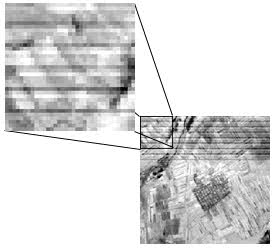
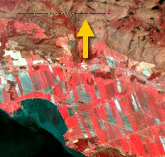
Correcciones geométricas: Rectifican distorsiones para que la imagen concuerde con coordenadas reales. Requiere Puntos de Control Terrestre (GCP).
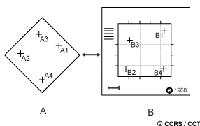
Para reubicar los valores en la nueva cuadrícula, se emplea el remuestreo: 1. Vecino más cercano: Conserva valores originales, pero produce bordes escalonados. 2. Interpolación bilineal: Promedia 4 píxeles cercanos. 3. Convolución cúbica: Promedia 16 píxeles, logrando la mejor estética visual.
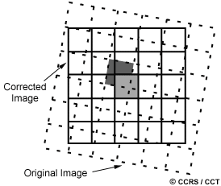
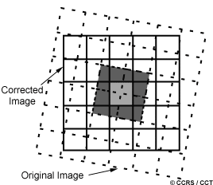
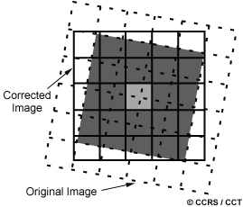
9.5 Realce de imágenes
Maximiza el contraste operando sobre el histograma de la imagen.
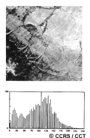
- Expansión de contraste lineal: Estira los valores mínimo y máximo de la imagen cruda para que ocupen todo el rango dinámico de la pantalla.
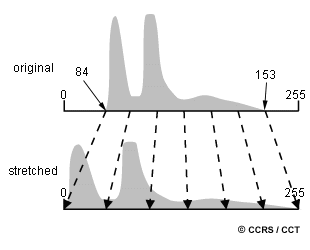
- Ecualización del histograma: Redistribución no lineal que asigna más rango a los valores más frecuentes en la imagen, acentuando sutiles detalles locales.
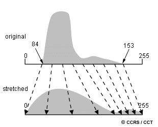
Filtrado espacial: Usa una ventana móvil para alterar la “frecuencia espacial”. Los filtros paso bajo suavizan la imagen (útiles en radar). Los filtros paso alto acentúan bordes y estructuras finas.
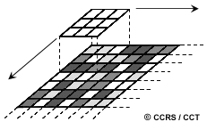
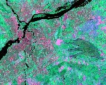
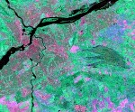
9.6 Transformaciones de imágenes
Operaciones algebraicas sobre dos o más canales espectrales. * Sustracción de imágenes: Resta los píxeles de imágenes de distintas fechas. Lo que no cambia tiende a gris medio; los cambios bruscos (ej. deforestación) quedan muy claros u oscuros.
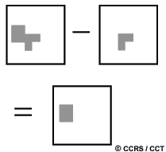
- Cálculo de cocientes (Ratioing): Dividir una banda por otra reduce el efecto de las sombras por topografía abrupta. Permite derivar índices vitales como el NDVI, que evalúa el vigor fotosintético.
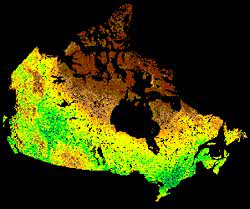
- Análisis de Componentes Principales (PCA): Condensa estadísticamente la información redundante de múltiples bandas en solo 2 o 3 nuevos “componentes” que capturan casi toda la varianza de la escena.
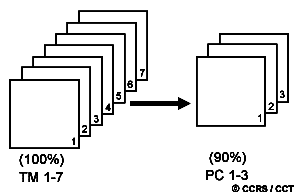
9.7 Clasificación de imágenes y análisis
Convierte el continuo radiométrico en un mapa de unidades temáticas discretas.
- Clasificación supervisada: El analista entrena al algoritmo proporcionando “áreas de muestra” de coberturas conocidas. El sistema extrae las firmas estadísticas y clasifica el resto de la imagen según dichas firmas.
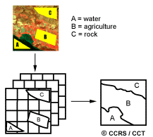
- Clasificación no supervisada: Operación automática donde un algoritmo agrupa los píxeles en “clústeres” basándose exclusivamente en su distancia estadística. Posteriormente, el analista interpreta qué representa cada clúster.
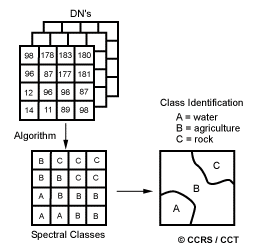
9.8 Integración de datos y SIG
El análisis moderno requiere fusionar diversas fuentes georreferenciadas.
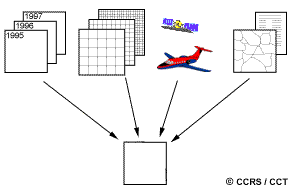
Se puede integrar alta resolución espacial pancromática con multiespectral gruesa (ej. SPOT), o fusionar espectro óptico con textura de Radar SAR para potenciar la discriminación.
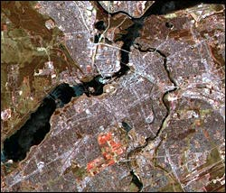
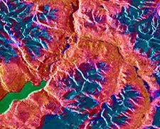
Sumar Modelos Digitales de Elevación (DEM) permite compensar efectos topográficos y generar vistas en perspectiva 3D.
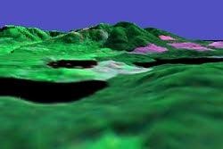
Todas estas tecnologías forman el corazón de los Sistemas de Información Geográfica (SIG), estructurando el territorio en capas temáticas para permitir modelamientos y toma de decisiones integrales.
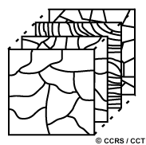